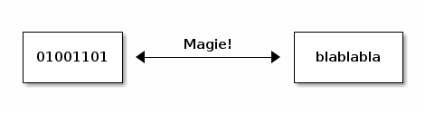
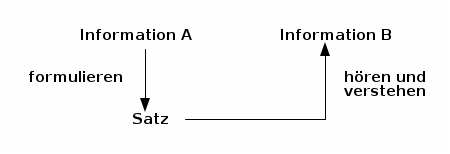
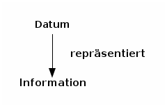
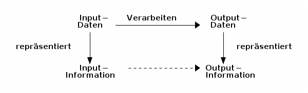

Welche Sprache spricht eigentlich ein Computer; oder: warum versteht Siri mich immer falsch?¶
Wer programmieren lernen will, der muss erst einmal verstehen, wie man sich seinem Computer gegenüber verständlich macht.
Das Klischee, dass Computer eine Sprache sprechen, die nur aus 0’en und 1’en besteht ist zwar nicht hundertprozentig treffend (die meisten Computerchips können auch eine Handvoll anderer Wörter, genannt Instruktionen), aber eigentlich gar keine schlechte Approximation.
Also, wir wissen nun, dass der Computer in Binärcode spricht und wir selbst aber eher deutsch, englisch, oder eine andere natürliche Sprache. Das ganze lässt sich also wie folgt zusammenfassen:
Ich denke,Sie sollten doch etwas spezifischer sein,hier in Schritt zwei.
Informationen und Daten¶
Egal ob Computer oder Mensch, unsere Sprachen haben einige Dinge gemeinsam. Erstmal, ganz grundlegend, benutzen wir unsere Sprache um Informationen auszutauschen. Wir haben Wörter, über deren Bedeutung wir uns weitestgehend einig sind und setzen diese zusammen in Sätzen, die dann hoffentlich die Information übermitteln, die wir im Sinn hatten.
Wenn sich zwei Personen treffen, die beide deutsch sprechen, dann ist das relativ unkompliziert. Beide Personen wissen, was die Wörter bedeuten und wie die Sätze aufgebaut sein müssen, damit die andere Person sie versteht.
Wenn ein Satz nicht klar formuliert war, dann kann es sein, dass Information A und Information B nicht gleich sind. Zwischen Menschen kann so ein Missverständnis zu gegenseitiger Frustration führen. Im Umgang mit Computern ist diese Frustration zwar einseitig, dafür aber oftmals umso größer.
Loki [verschmitzt]: Habt ihr das gesehen?Der Mann hat die Frau auf dem Fahrrad verfolgt!Alfrothul: Oh nein! Wie gemein!Ich hoffe, sie ist eine gute Läuferin!Brynja: Gar nicht gemein.Sie hat nicht bemerkt, dass ihr etwasaus dem Fahrradkorb gefallen war.
Wenn sich aber zum Beispiel ein Deutscher und ein Franzose treffen, ist deren Lingua franca (ironischerweise; siehe Link) wahrscheinlich Englisch. Beide denken immernoch die gleichen Gedanken wie zuvor, aber nun müssen sie andere Worte für die gleichen Konzepte benutzen. Die Sätze sind auch anders aufgebaut.
Ungefähr so funktioniert das auch mit Computern. Statt der Worte haben wir Daten, die Informationen repräsentieren:
(NB: Das Wort „Daten“ (englisch „data“) kommt aus dem Lateinischen und ist eigentlich Plural. Der korrekte Singular ist „Datum“.)
Im Computer werden Daten von einem Daten-Konstruktor erstellt. Die Repräsentation der Information kann zwei Eigenschaften haben.
- Eine Repräsentation ist korrekt (englisch: sound), wenn der richtige Gebrauch der Daten-Konstruktoren immer Daten erstellt, die wirklich das repräsentieren, was sie repräsentieren sollen. (Sonst ist die Repräsentation inkorrekt (unsound).)
- Eine Repräsentation ist komplett (englisch: complete), wenn wir alle Information, die wir repräsentieren möchten mit Gebrauch der Daten-Konstruktoren repräsentieren können. (Sonst ist die Repräsentation inkomplett (incomplete).)
In OCaml (der Programmiersprache, mit der wir in diesem Kurs arbeiten), hat die Standard-Repräsentation von Integern (Ganzzahlen) eine feste Größe. Das heißt, dass (in diesem Fall) nur Zahlen zwischen -4611686018427387904 und 4611686018427387903 repräsentiert werden können. Diese Repräsentation ist korrekt, für alle Zahlen zwischen -4611686018427387904 und 4611686018427387903, da diese wirklich mathematische Ganzzahlen darstellen. Diese Repräsentation ist nicht komplett, da Zahlen, die kleine als -4611686018427387904 oder größer als 4611686018427387903 sind nicht dargestellt werden können.
Erkenntnis über Repräsentationen¶
Kurz gesagt: eine Repräsentation und das, was sie repräsentiert, sind zwei unterschiedliche Dinge.
- Ein Name ist nicht das, was er benennt (z.B., wir sind nicht unsere Namen).
- Eine Adressse ist kein Haus.
- Eine Note ist nicht ihr Name (C, D, E, F, G, A, H) und auch nicht der Ton, den sie beschreibt.
- usw.
Mimer: Das erinniert mich an das Bild von René Magritte?Alfrothul: Du meinst die Pfeife?Brynja: Eben nicht, das ist ja genau der Punkt.Mimer: Genau. „Der Verrat der Bilder“ beschäftigt sich genau damit.Magritte hat eine Pfeife gemalt und darunter geschrieben: „Dies ist keine Pfeife“.Alfrothul: Weil es nur ein Bild von einer Pfeife ist.Brynja: Wenn man es genau nimmt, Mimer, hat er auch nicht geschrieben:„Dies ist keine Pfeife“, sondern „Ceci n’est pas une pipe.“Deine Übersetzung war auch nur eine Repräsentation.Loki: Ist das hier dann auch kein Lehrmaterial?Alfrothul: Das, was mein Schirm mir anzeigt, kann ich lesen und davon lernen.Ich glaube, das ist doch Lehrmaterial.Brynja: Ich glaube auch. Die Dateien sind die Repräsentation, die der Computer lesen kann,aber sobald es auf dem Schirm ist, ist es Lehrmaterial.„Mad-Eye“ Moody: Ständige Wachsamkeit!
Übung 0¶
Für einige der folgenden Übungen müsst ihr den OCaml-Prozessor in Emacs benutzen. Ihr werdet vorerst nur mit Zahlen und einfacher Arithmetik arbeiten. Kein Grund also für Berührungsangst.
Öffne Emacs und gib ein M-x run-ocaml <RET> (das heißt: halte die Meta (<Alt>)
Taste gedrückt und drücke dann x; dann schreib run-ocaml und drücke
<Enter>) und drücke noch einmal <Enter>.
Dein Emacs hat sich nun in zwei Fenster aufgeteilt. Der Cursor ist aber noch im
falschen Fenster. Drücke C-x o um zwischen den Fenstern zu wechseln (das heißt:
halte die <Strg>-Taste gedrückt und drücke x; dann lass die <Strg>-Taste los und
drücke o). Wenn du das Fenster, in dem sich dein Cursor befindet, schließen
möchtest, drück C-x 0 (das heißt: halte die <Strg>-Taste gedrückt und drücke
x; dann lass die <Strg>-Taste los und drücke 0). Wenn du alle Fenster
schließen willst bis auf das, in dem sich dein Cursor befindet, drücke C-x 1
(das heißt: halte die <Strg>-Taste gedrückt und drücke x; dann lass die
<Strg>-Taste los und drücke 1).
OCaml version 4.14.0
Enter #help;; for help.
#
Wenn wir einen „Ausdruck“ (eng: expression) gefolgt von ;; eingeben und dann
<RET> (also die <Enter>-Taste) drücken, dann berechnet OCaml diesen Ausdruck und
- druckt ein Resultat gefolgt von einer neuen Zeile mit
#, welche auf weitere Eingaben wartet; - druckt eine Fehlermeldung (auch ein Resultat) gefolgt von einer neuen Zeile mit
#, welche auf weitere Eingaben wartet; oder - druckt eine neue Zeile, die sich aber um keine Eingaben kümmert, weil der Prozess
divergiert (das bedeutet länger läuft als wir warten wollen, womöglich
unendlich). In diesem Fall drücke
C-c C-cum den Berechnung abzubrechen (das heißt: Halte die <Strg>-Taste gedrückt und drückec, dann halte die <Strg>-Taste gedrückt und drückec).
Ein simpler Ausdruck ist zum Beispiel 1;;.
# 1;;
- : int = 1
#
Wir können OCaml auch um kompliziertere Berechnungen bitten:
# 2+2;;
- : int = 4
#
Nun hat OCaml das + als Operation verstanden und gibt uns das Resultat.
Probiere selbst noch ein paar andere Ausdrücke und Operationen aus. Wie wäre es zum
Beispiel mit Subtraktion (-) oder Multiplikation ( * )?
Diese einfachen Rechenstücke geben immer ein Resultat. Wenn du nach einer Eingabe
trotzdem eine neue Zeile ohne # bekommst, dann hast du das ;; vergessen.
Übung 01¶
Computer benutzen eine binäre Repräsentation von Zahlen (das mit den Nullen und
Einsen). Benutze Emacs und den OCaml-Code für das gegenwärtige Lehrmaterial um
die folgenden Aufgaben zu lösen (eine Anleitung dazu gibt es hier). Oder lest einfach die teilweise Lösung im nächsten Abschnitt.
Welche Potenz von 2 ist die größte, die OCaml korrekt darstellen kann? In anderen Worten: Was ist die größte Zahl,
x, so dass OCaml \(2^x\) korrekt repräsentiert? (Tipp: 4611686018427387904 ist eine Potenz von 2.)Hinweis: Der OCaml-Code für das gegenwärtige Lehrmaterial lässt euch exponenten normal schreiben (das heißt ihr schreibt
2^3, wenn du :math: 2^3 meint). Normalerweise bedeutet der Operator(^)etwas anderes in OCaml, das heißt, wenn ihr die Datei nicht ladet, bekommt ihr eine Fehlermeldung, die ihr noch nicht versteht.Und was, wenn wir nach dem kleinsten \(-(2^x)\) suchen? (Achtung! Ihr könnt nicht einfach
-2^n;;ausprobieren, da ihr bei geraden exponentennimmer ein positives Ergebnis bekommt. Minus-mal-minus und so…)
Teilweise Lösung zu Übung 1a¶
Sigrid: Das ist einfach, dafür müssen wir die Zahlen einfach alle ausprobieren.
# 2^2;;
Line 1, characters 0-1:
1 | 2^2
^
Error: This expression as type int but an expression was expected of type string
Alfrothul: Ich glaube, wir müssen OCaml erst erzählen, dass es den OCaml-Coder für diese Woche benutzen soll.
Sigrid: Achja, stimmt.
# #use "exercises_for_week-01.ml";;
val test_exp : (int -> int -> int) -> bool = <fun>
exception Exponent_unter_null of int
val ( ^ ) : int -> int -> int = <fun>
val execute_test_exp : bool = true
#
Sigrid: Was hat das denn alles zu bedeuten?
Brynja: Ich schätze mal, dass das die Resultate der .ml-Datei sind, die wir OCaml gerade haben berechnen lassen.
Alfrothul: Das sieht kompliziert aus. Aber da sollten wir uns wahrscheinlich jetzt noch nicht drum kümmern. Zurück zur Übung.
Sigrid: Okay, ich weiß schonmal, dass :math: 2^8 = 256 ist. Kleinere Zahlen muss ich also gar nicht ausprobieren. Also von da aus weiter:
# 2^9;;
- : int 512
# 2^10;;
- : int 1024
# 2^11;;
- : int 2048
Alfrothul: Das könnte eine ganze Weile dauern… gähn!
Brynja: Leute, ich habe eine Idee. Was, wenn wir erstmal eine Zahl ausprobieren, die bestimmt zu groß ist?
# 2^100;;
- : int = 0
Sigrid: Die war wirklich zu groß. Aber wir wissen ja jetzt gar nicht mehr, wie weit wir von 4.611.686.018.427.387.903 weg sind. Was nun?
Brynja: Jetzt nehmen wir einfach die in der Mitte zwischen der größten zu kleinen und der kleinsten zu großen Zahl. Die Mitte zwischen 11 und 100 ist… warte, das kann ich nicht im Kopf.
# 100 - 11;;
- : int 89
# 11 + (89 / 2);;
- : int 55;;
Alfrothul: Okay, 55, weiter im Text:
# 2^55;;
- : int = 36028797018963968
Sigrid: Wow! Damit sind wir ja schon viel näher dran.
Brynja: Okay, wieder die Hälfte. Diesmal ist das einfacher: 77.
# 2^77;;
- : int = 0
Alfrothul: Mist, wieder zu groß. Aber ich glaube, ich habe das Prinzip jetzt begriffen. Jetzt nehmen wir die Mitte zwischen 77 und 55, richtig?
Brynja: Genau.
Mimer: Wisst ihr, dass euer System ein gängiger Algorithmus ist?
Sigrid: Nein?
Mimer: Doch! …
Alfrotul: [Mimer unterbrechend] Oh!
Mimer: [lächelnd] Der Algorithmus heißt binäre Suche und funktioniert in jeder sortierten Liste. Also zum Beispiel in einem Telefonbuch, oder wie ihr es hier mach, in der Reihe der Natürlichen Zahlen.
Brynja: In einem Telefonbuch würde man also erst in der Mitte aufschlagen…
Alfrothul: [mit einer Glühbirne über dem Kopf] Ah! Und dann schauen ob man weiter nach vorne oder weiter nach hinten blättern muss. Wenn man weiter nach vorne muss, behält man einen Finger in der Mitte und geht ungefähr zur Hälfte zurück nach vorne.
Brynja: Genau. Und dann wieder die Mitte. Entweder zwischen dem Anfang und der neuen Position oder der Mitte und der neuen Position.
Sigrid: Ich glaube, ich verstehe!
[Sie zieht ein Wörterbuch aus dem Regal.]
Sigrid: Das hier ist doch auch sortiert. Da müsste das auch gehen. Gebt mir mal ein zufälliges Wort!
Alfrothul: Hier ist ein Zufallswort-Generator.
Mimer: Sehr gut! Ihr lernt auch noch mehr über Algorithmen in ein paar Wochen. Jetzt zurück zu Übung 1.
Ein kurzer Abstecher zu binären Zahlen¶
Wenn wir im Alltag Zahlen benutzen, dann benutzen wir das Dezimalsystem. Wer ein
Bisschen Latein kann, der weiß, dass „dezi“ 10 bedeutet. Guckt man sich dann unser
Zahlensystem an, bemerkt man, dass wir 10 unterschiedliche ziffern haben: 0, 1, 2,
3, 4, 5, 6, 7, 8, 9.
Im Binärsystem ist das ähnlich (nur mit Griechisch statt Latein). Das Präfix „bi-“
bedeutet was mit 2; und ganz richtig das Binärsystem hat zwei unterschiedliche
Zahlen: 0, 1. (Das ist praktisch für Computerchips, deren einzige zwei Zeichen
Strom an und Strom aus sind. Deshalb benutzen Computer das Binärsystem.)
Brynja: Fällt euch was auf Leute?Sigrid: Du meinst, dass das Binärsystem gar keine 2 benutzt,obwohl es das Zweiersystem ist?Alfrothul: Ich glaube, Brynja meint,dass wir schon wieder von Repräsentationen reden.Brynja: Genau. Wenn wir also 3 meinen, können wir3schreiben,oder11im Binärsystem.Sigrid: Stimmt. OderIIIin römischen Zahlen.Alfrothul: Ja, aber bitte nichts mehr über tote Sprachen heute.
- Wenn wir im Dezimalsystem zählen wollen, fangen wir mit einer Stelle an und zählen von der kleinsten Ziffer zur größten. So kommen wir bis 9.
- Wenn wir weiter zählen wollen, setzen wir eine 1 voran und zählen wieder die hinterste Stelle hoch. Wenn diese bei der größten Zahl, also 9, angekommen ist, zählen wir die Stelle davor eine hoch. So kommen wir bis 99.
- Wenn wir weiter zählen wollen, setzen wir eine 1 voran und… bemerken, dass wir uns irgendwie immer wiederholen. Wir vergrößern die Ziffern von rechts nach links, bis alle Ziffern 9 sind. Dann setzen wir alle Ziffern wieder auf 0 und schreiben eine 1 davor.
Mit diesem Verständnis ist das Zählen im Binärsystem auch nicht mehr kompliziert:
- Wenn wir im Binärsystem zählen wollen, fangen wir mit einer Stelle an und zählen von der kleinsten Ziffer zur größten. So kommen wir bis 1.
- Wenn wir weiter zählen wollen, setzen wir eine 1 voran und zählen wieder die hinterste Stelle hoch. Wenn diese bei der größten Zahl, also 1, angekommen ist, zählen wir die Stelle davor eine hoch. So kommen wir bis 11.
- Wenn wir weiter zählen wollen, setzen wir eine 1 voran und… bemerken, dass wir uns irgendwie immer wiederholen. Wir vergrößern die Ziffern von rechts nach links, bis alle Ziffern 1 sind. Dann setzen wir alle Ziffern wieder auf 0 und schreiben eine 1 davor.
Soviel zum zählen. Aber wie rechnen wir jetzt um?
Dafür brauchen wir Potenzen. (Am Computer schreiben wir \(n^x\) als n^x.)
- Im Dezimalsystem ist die kleinste positive Zahl eine
1. Das lässt sich auch schreiben als10^0. - Die kleinste zweistellige Zahl ist
10, oder auch10^1. - Die kleinste dreistellige Zahl ist
100, oder auch10^2. - Die kleinste vierstellige Zahl ist
1000, oder auch10^3. - usw.
Wenn wir also 1234 schreiben, bedeutet das: 4*10^0 + 3*10^1 + 2*10^2 +
1*10^3, oder leserlicher: 4*1 + 3*10 + 2*100 + 1*1000.
Im Binärsystem geht das genauso, aber mit Potenzen von 2.
- Die kleinste positive Zahl ist eine
1, oder auch2^0. - Die kleinste zweistellige Zahl ist
10, oder auch2^1(dezimal: 2). - Die kleinste dreistellige Zahl ist
100, oder auch2^2(dezimal: 4). - Die kleinste vierstellige Zahl ist
1000, oder auch2^3(dezimal: 8). - usw.
Wenn wir also 1010 schreiben, bedeutet das: 0*2^0 + 1*2^1 + 0*2^2 + 1*2^3,
oder leserlicher: 0*1 + 1*2 + 0*4 + 1*8 = 10.
Übung 1, Fortsetzung¶
Wer aufgepasst hat, hat folgendes bemerkt:
Die größtmögliche Zahl,
max_int, ist(2^x)-1.Die kleinstmögliche Zahl,
min_int, ist-(2^x).Beide für die gleiche Zahl x.
Was bedeutet das im Zusammenhang mit dem Binärsystem? Hast du eine Idee, warum es genau eine negative Zahl mehr gibt als positive? (Tipp: Gibt es eine Zahl, die immer gleich bleibt, egal welches Vorzeichen sie hat?)
Berechnungen als Datenverarbeitung¶
Ein Computer verarbeitet Daten. Wenn ein Computer mit Daten gefüttert wird, die eine Input-Information darstellen, kann er:
- Output-Daten produzieren, die eine Output-Information darstellen,
- einen Fehlercode anzeigen (was auch Output-Information ist), oder
- unendlich im Kreis laufen, also keine Daten herausgeben.
Eine Stapelverarbeitung ist ein Prozess der Input-Daten nimmt, die eine Input-Information repräsentieren, eine Berechnung mit diesen Daten ausführt, und Output-Daten ausspuckt, die eine Output-Information repräsentieren:
Außer Stapelverarbeitungen gibt es auch noch andere Verarbeitungen; z.B. die reaktiven, die zufällige Buchstaben auf dem Bildschirm anzeigen, wenn die Katze mal wieder über die Tastatur läuft. Aber Stapelverarbeitungen sind ein guter Startpunkt.
- Wenn die Output-Daten einer Stapelverarbeitung immer die richtige Output-Information darstellen, ist die Berechnung korrekt.
- Eine Stapelverarbeitung ist komplett, wenn die erwartete Output-Information immer von den Output-Daten repräsentiert wird.
Übung 2¶
Probier ein Bisschen mit Großen Zahlen und
+herum.Ist der Operator
(+)eine korrekte Repräsentation der mathematischen Operation +? (Das heißt:Ist der Operator
(+)eine komplette Repräsentation der mathematischen Operation +?
Programme¶
Ein Programm ist das Rezept, dem ein Computer folgt um Daten zu verarbeiten. Ein Programm berechnet eine Funktion von Input-Daten zu Output-Daten. Ein Programm wird von einem Programmierer geschrieben.
Ein guter Vergleich: Ein Kochrezept ist eine Notation, die vermittelt wie man etwas kocht. Es beschreibt Daten (die Zutaten), Ressourcen und Werkzeuge (z.B. ein Topf und ein Herd), und einen Algorithmus (die Methode die Daten zu verarbeiten, z.B. Eier schlagen um ein Omlett zu machen (die Armen Eier…)). Um ein Gericht zuzubereiten benutzt ein Koch die Küchenutensilien um die Zutaten entsprechend dem Algorithmus zu verarbeiten.
Programmiersprachen¶
Eine Programmiersprache ist eine Sprache in der man Programme schreibt: eine Notation um Berechnungen zu beschreiben. Es gibt viele Konzepte für Berechnungen (das heißt viele unterschiedliche Arten, informationen darzustellen und Daten zu verarbeiten), und für jedes dieser Konzepte gibt es viele Notationen (das heißt viele Programmiersprachen).
Version¶
Erstellt [2022-10-10]